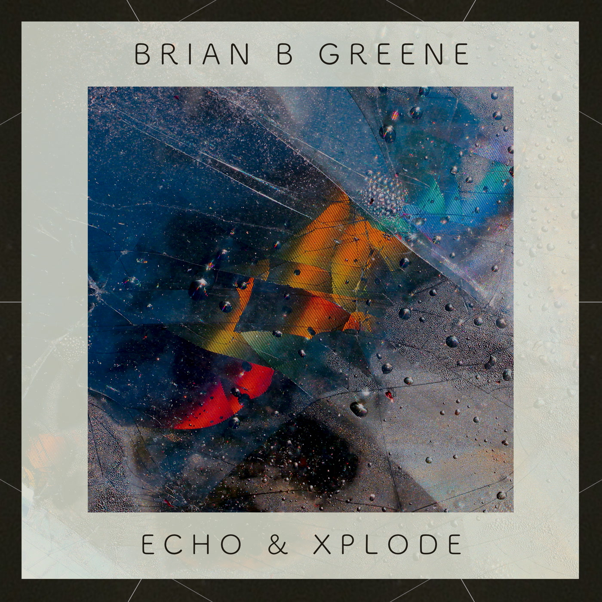
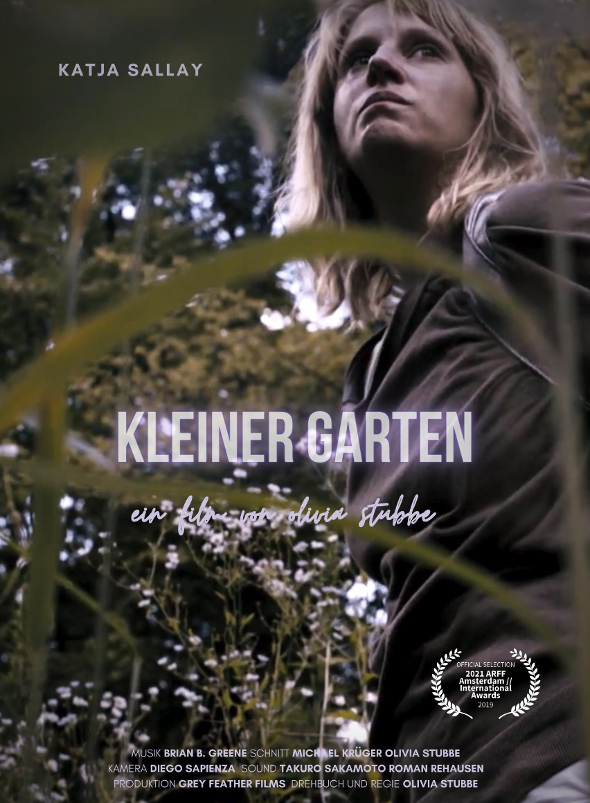
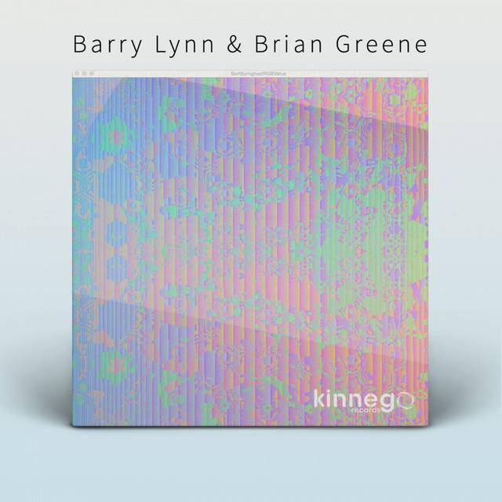
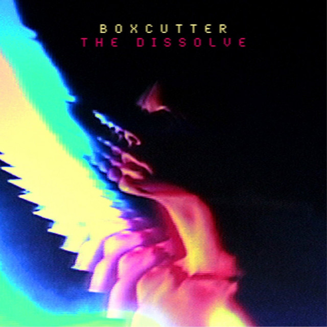
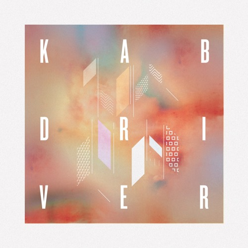
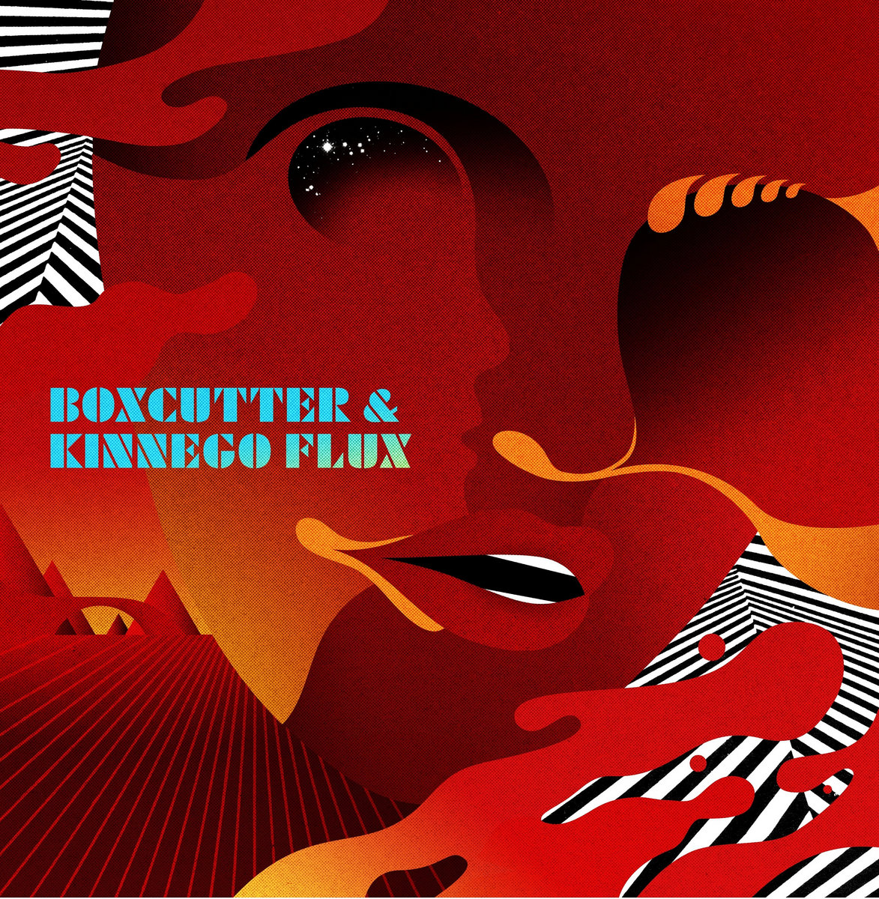

'Echo & Xplode'EP is the fifth release on Belfast-based boutique label, Reset Industries.
Recorded in the Funkhaus, Berlin, these four tracks maintain focus on vocals while deploying ambient keys, deep bass textures, intimate grooves and flowing arrangements.
Densely layered vocal harmonies are at the heart of the soulful 'All is Real' and the beat driven meander of 'Half in Half'.
Strong dynamic arcs weave their way through the productions of 'Carve a Blue Stone' and'Xplode',
a song that captures the obscured memory of a bombing in Northern Ireland.
All musical performances, compositions, recordings and mixing by Brian Greene.
Berlin. Wasim and his mother haven't been getting along for a while.
Their fraught relationship is tested when the police orders them to evacuate their home for the night, to excavate a World War Two bomb.
All musical performances, compositions, recordings and mixing by Brian Greene.
After the loss of her boyfriend, Henri, a young woman is burying his ashes.
While tending to his grave, she tries to rectify her mixed feelings towards him when he was alive while struggling with her grief and loneliness.
All musical performances, compositions, recordings and mixing by Brian Greene.

Having collaborated on several Boxcutter albums, especially on The Dissolve (released on Planet Mu in 2011)
these 3 pieces offer more emphasis on lyrical narratives and arrangements.
Lead track "As If U" flips some D50 flutes, bass guitar and a jazz fusion sample into a deep,
hollow-sounding track that is contrasted with lyrics exploring themes of benevolence and exploitation against a kind soul.
"Remote Relations" (with multiply plays on BBC 6 Music) is a pulsing bass guitar driven track with a wistful vocal delivery musing on long distance relationships.
The lyrics on "What It Means" lament on winter. A spectral boogie track full of instrumental overtones and crackling drums.
All lyrics, vocal performances, vocal mixes by Brian Greene. Tracks co-arranged by Barry Lynn & Brian Greene.

A collaboration on 3 tracks for this full length album by Boxcutter.
One of the collaborations, the title track "The Dissolve", made Bleep: 100 tracks of 2011.
Each piece utilises hazy and effect laden vocals.
"All Too Heavy" is a down-tempo, funk driven piece with cosmic lyrics and choral refrains.
"The Dissolve" is open and dreamy.
"Ufonik" sparkles with intense synth hits, slow moving rhythms and dense vocal harmonies.
All lyrics, vocal performances, vocal mixes of previously mentioned tracks by Brian Greene. Previously mentioned tracks co-arranged by Barry Lynn & Brian Greene.

A collaboration on 1 track for this full length album by Kab Driver.
The piece "Batteria" is a techy dubstep funk track with driving falsetto vocals, reversed harmonies,
building refrains and layered phrases.
All lyrics, vocal performances, vocal mixes of previously mentioned track by Brian Greene. Previously mentioned track co-arranged by David Baxter, Barry Lynn & Brian Greene.

A collaboration on this single. "Familiar Sound" combines funk and soul with electronics using instruments,
vocals and hardware synths. It was premiered on a Scuba's Electronic Explorations mix.
It fuses RnB with a dark dubstep sensibility through rolling stabs of sound and falsetto vocals.
All lyrics, vocal performances, vocal mixes by Brian Greene. Track co-arranged by David Baxter, Barry Lynn & Brian Greene.